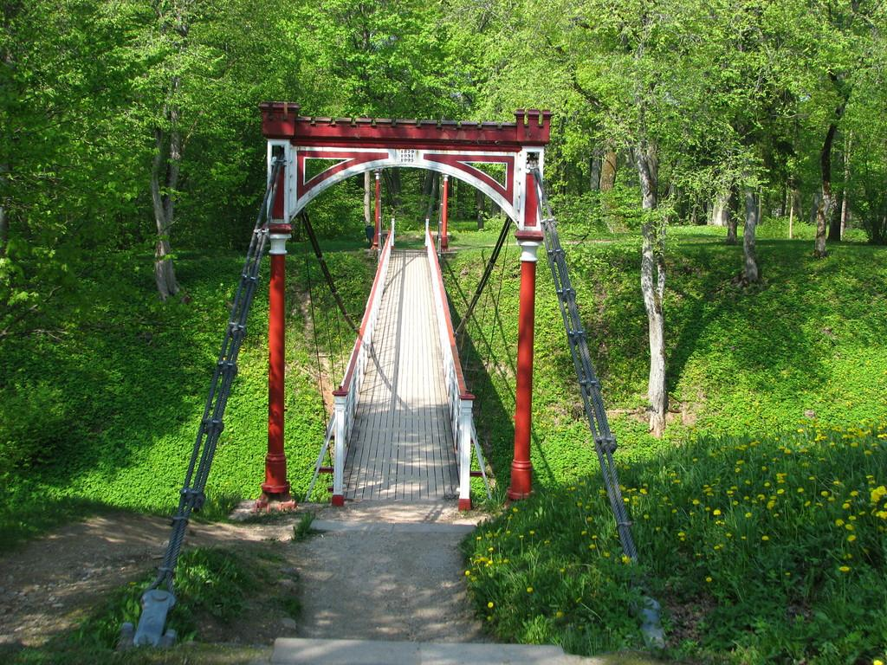

Viljandi


Päris Eesti keskel, Viljandimaal, asub üks loomiseks loodud linn. Siia on aegade jooksul kokku tulnud kunstnikke, teatraale ja muusikuid, aga ka tööstureid, kaupmehi ja innovaatoreid.
Viljandis tuleks minna Lossimägedesse (- Ordulinnuse varemed,
- rippsild,
- Pärimusmuusika Ait
4.-7.juunil 2015 toimusid Viljandis 35.rahvusvahelised Hansapäevad Suvel 2018 ootas hansalinn Rostock oma 800.aastapäevale pilte Viljandist
Viljandi pärimusmuusika festival on toonud kokku head muusikat tervest maailmast juba 25 aastat. Juuli viimasel nädalavahetusel kasvab linna elanikkond kahekordseks, kui siia saabub ligi 20 000 külalist, et saada osa võimsast rahvusvahelisest muusikapeost. Linna külalisi ootavad kenad majutuskohad